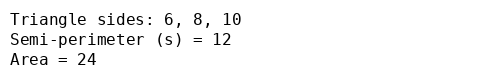
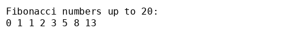

Тема роботи: Робота з Laragon, Brackets та написання PHP‑скриптів.
Виконавець: Андрій Клим (група KN1‑B22)
Дата виконання: 25 серпня 2025 р.
Варіант: 9
Розрахунок площі трикутника за формулою Герона для сторін a = 6, b = 8 та c = 10.
Скрипт знаходиться у файлі triangle.php. Він обчислює напівпериметр та площу трикутника за формулою Герона й виводить результат у консоль.
Результат роботи скрипта:
Виведення чисел Фібоначчі до 20.
Скрипт знаходиться у файлі fibonacci.php. Він генерує послідовність чисел Фібоначчі, поки їхнє значення не перевищує 20, і виводить їх у консоль.
Результат роботи скрипта:
Для розгортання локального PHP‑середовища рекомендується встановити Laragon – портативне та легке рішення для веб‑розробки. Завантажте останню версію з офіційного сайту Laragon і запустіть інсталятор. Процес встановлення простий: після завантаження достатньо натиснути «Next» декілька разів – середовище буде готове до роботи【307142059689103†L30-L34】.
Після встановлення запустіть Laragon, натисніть кнопку Start All, щоб активувати сервери. Для створення нового проєкту PHP перейдіть до меню Menu → Quick app, виберіть потрібний шаблон (наприклад, «Blank» для порожнього проєкту), задайте ім’я проєкту та натисніть OK. Laragon автоматично створить каталог у директорії www і згенерує для нього «причепурену» URL‑адресу【906794730162377†L34-L47】.
Редактор Brackets підтримує встановлення розширень. Щоб файли зберігались автоматично, відкрийте Extension Manager (друга піктограма у правій панелі) і у вкладці Available знайдіть розширення «Autosave files on Window Blur». Цей плагін автоматично зберігає всі відкриті файли, коли редактор втрачає фокус【358229809032053†L146-L154】. Оберіть розширення у списку та натисніть Install. Після встановлення перезапустіть Brackets【358229809032053†L180-L193】. За потреби можна скористатися іншими варіантами авто‑збереження, наприклад «Autosave» або «Autosave Every Edit», які також доступні у менеджері розширень.
Для публікації результатів роботи створіть власний обліковий запис на GitHub (якщо його ще не маєте) і створіть новий репозиторій з назвою PHPLABS‑KLYM. У структуру репозиторію додайте папку LAB01 та завантажте до неї файли з цього завдання: triangle.php, fibonacci.php, triangle_output.png, fibonacci_output.png та поточний файл index.html. Після завантаження надайте посилання на файл index.html як звіт у системі Moodle.